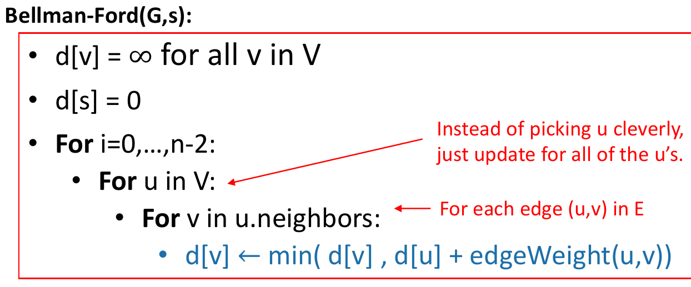
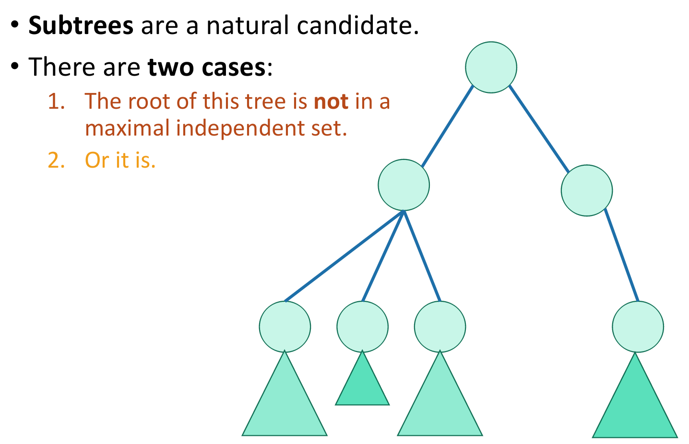

Algorithms final summary
How do we represent graphs?

Trade-offs
DFS
Running time to explore just the connected component we started in
Topological ordering
DAG (Directed Acyclic Graph)
directed graph with no directed cycles
Finish times seems useful
BFS
Running time to explore the whole thing
Shortest path
Shortest path problem
Dijkstra algorithm

Why does this work?

Running time

If we use a red-black tree
Dijkstra drawbacks
Bellman-Ford

Running time
Bellman-Ford and negative edge weights

Recap: shortest paths
Dynamic programming
Elements of dynamic programming
Bottom up approach
Top down approach
Floyd-Warshall
Optimal substructure
How can we find \(D^{k}[u, v]\) using \(D^{k-1}\)

Floyd-Warshall algorithm
Graph algorithms

Recap
Longest common subsequence
Recipe for applying dynamic programming
Step 1: optimal substructure
Step 2: find a recursive formulation for the length of the longest common subsequence
Step 3: use dynamic programming to find the length of the longest common subsequence
Step 4: If needed, keep track of some additional info so that the algorithm from step 3 can find the actual LCS.
Step 5: if needed, code this up like a reasonable person
Knapsack
Step 1: Identify optimal substructure
Step 2: Find a recursive formulation for the value of the optimal solution
Step 3: Use dynamic programming to find the value of the optimal solution

Step 4: If needed, keep track of some additional info so that the algorithm from step 3 can find the actual solution.
0/1 knapsack
Step 1: identify optimal substructure
Step 2: find a recursive formulation for the value of the optimal solution
Step 3: use dynamic programming to find the value of the optimal solution
Question: how did we know which substructure to use in which variant of knapsack?
Independent set
NP-complete
so we are unlikely to find an efficient algorithm.
Step 1: Identify optimal substructure

Case 1: the root is not in a maximal independent set
Case 2: the root is in a maximal independent set
Step 2: find a recursive formulation for the value of the optimal solution
Step 3: use dynamic programming to find the value of the optimal solution
Greedy algorithms
Unbounded knapsack
Activity selection

At least it’s fast
What makes it greedy?

Three questions
Sub-problem graph view
Huffman coding
Minimum spanning tree
Prim’s algorithm
Kruskal’s algorithm

Both Prim and Kruskal
Class of “P” problems
Tractable / Intractable problems
Hamiltonian cycle
Traveling salesman problem
Intractable problems
P vs. NP
Nondeterministic algorithms

Nondeterministic and NP algorithms